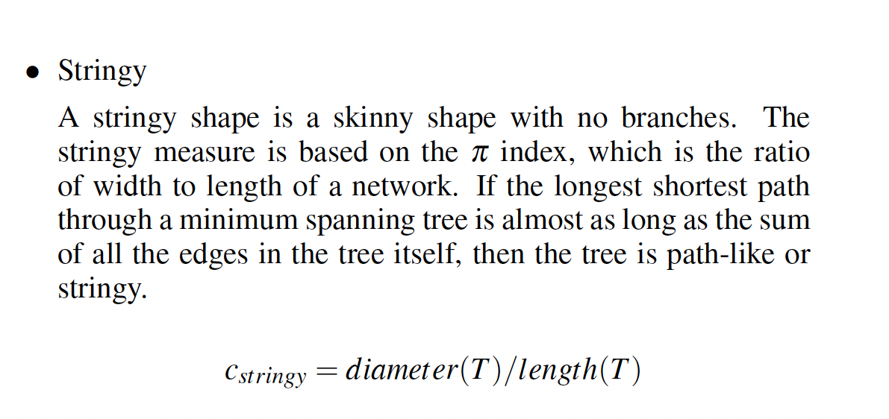
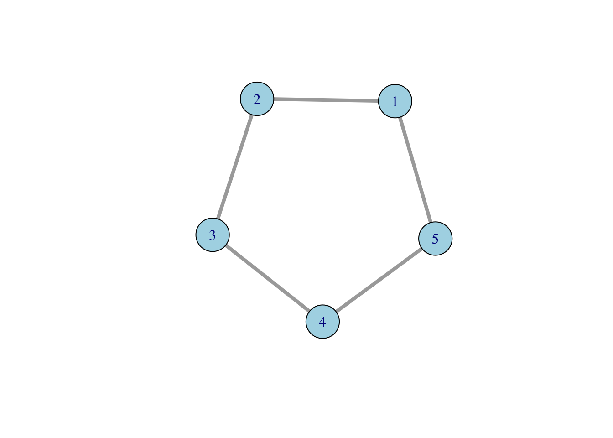
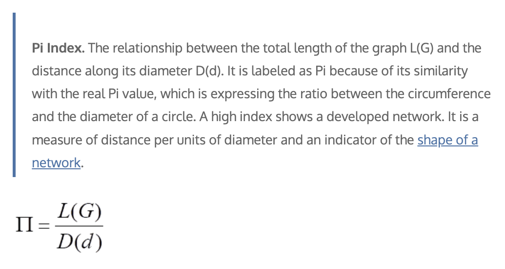
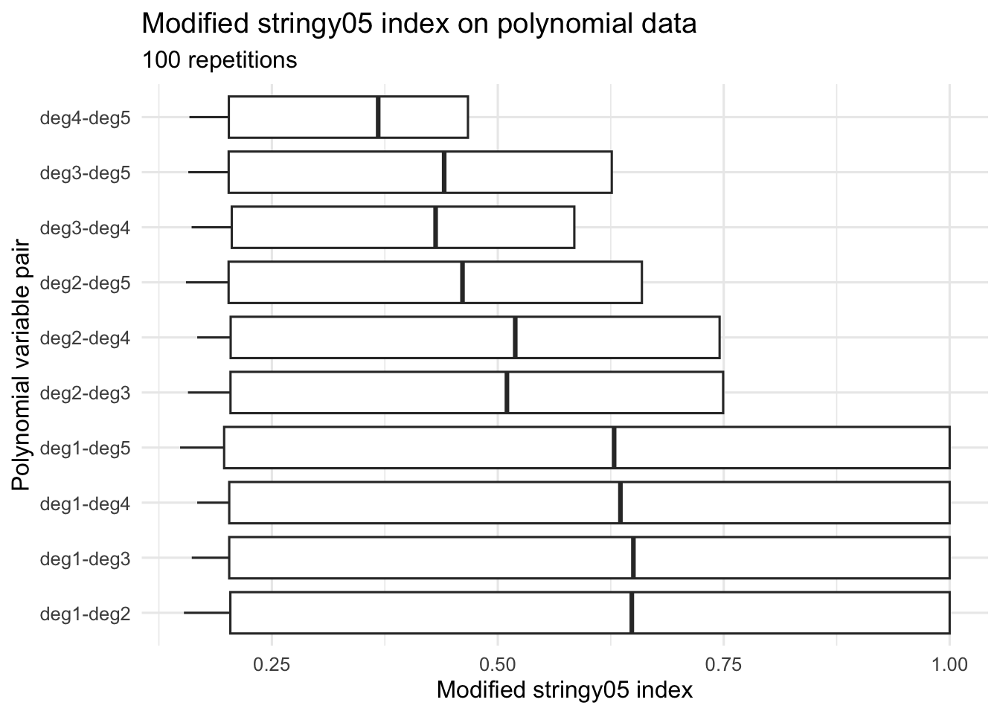
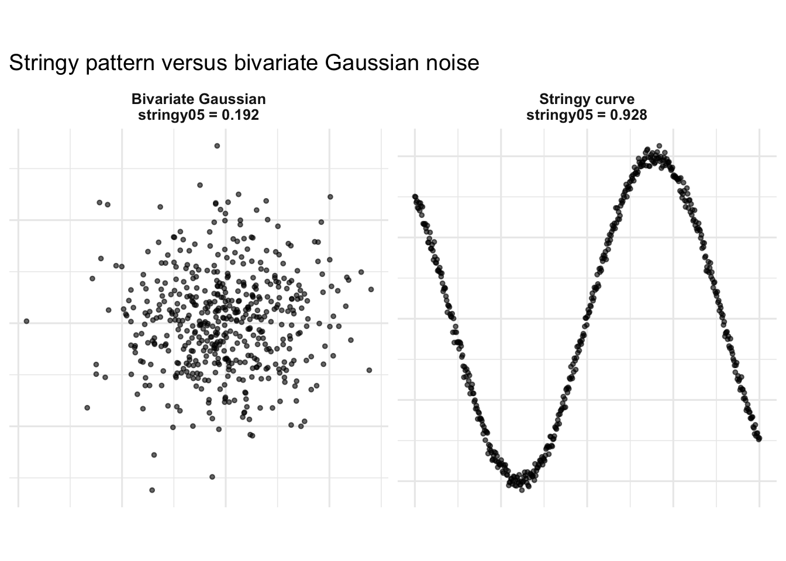

Code
library(cassowaryr)
library(spinebil)
library(tidyverse)
library(igraph)
library(knitr)While running simulations for scale analysis, especially while estimating the 95th percentile of the noise distribution for the stringy05 index, I noticed that some values were larger than 1. The exceedance was small, for example around 1.005, but it was still larger than 1. Since scagnostic indices are intended to be bounded between 0 and 1, this made me suspicious about whether the stringy05 definition had been implemented correctly.
The stringy05 index in the cassowaryr package is used for shape analysis and is designed to capture string-like patterns in two-dimensional data. A highly stringy pattern should give a value close to 1, while a non-stringy pattern should give a smaller value. However, even for a very strong string-like pattern, the index should not meaningfully exceed 1.
In this post, I describe how I debugged the stringy05 definition, why the previous implementation could produce values above 1, how I modified the formula, and how I tested whether the corrected version behaves as expected.
library(cassowaryr)
library(spinebil)
library(tidyverse)
library(igraph)
library(knitr)Scagnostic indices are designed to be bounded between 0 and 1. Therefore, values above 1 suggest that either the definition, the implementation, or the numerical calculation should be checked.
For stringy05, the intended idea is to measure how much of the minimum spanning tree (MST) is explained by its longest path. If the MST is almost a single curve-like path, then the longest path through the tree should cover nearly all of the MST length, and the index should be close to 1.
The issue is that “close to 1” is not the same as “larger than 1”. A value such as 1.005 is too large to ignore as numerical precision. This motivated a closer look at the implementation.
The original implementation of the stringy05 measure was:
diameter <- igraph::get_diameter(x)
length(diameter) / (length(x) - 1)This aims to compute the ratio between the length of the longest shortest path through the MST and the total length of the MST.
However, both the numerator and denominator are problematic.

To understand the issue with the numerator, consider a simple graph.
g <- igraph::make_ring(5)
plot(
g,
vertex.size = 30,
vertex.label = 1:5,
vertex.color = "lightblue",
edge.width = 4
)
Now calculate the diameter path using igraph::get_diameter().
diameter_vertices <- igraph::get_diameter(g)
diameter_vertices+ 3/5 vertices, from da87f3a:
[1] 1 2 3length(diameter_vertices)[1] 3The problem is that igraph::get_diameter() returns a sequence of vertices on the diameter path. Therefore, length(diameter_vertices) counts the number of vertices, not the length of the path.
For a path with 5 vertices, there are only 4 edges. Therefore, using the number of vertices as the path length creates an off-by-one error.
For an unweighted graph, the number of edges along the path would be:
length(diameter_vertices) - 1length(diameter_vertices) - 1[1] 2But for scagnostics, the MST edges are weighted by Euclidean distances. Therefore, the numerator should not be a vertex count or even just an edge count. It should be the weighted length of the longest shortest path through the MST.
The better function for this is:
igraph::diameter(g)This returns the length of the longest shortest path. When the graph has edge weights, the weighted diameter should be used.
The denominator in the original implementation was:
length(x) - 1This is also problematic. For an igraph object, length(x) does not represent the total weighted length of the MST. Even if it is interpreted as the number of vertices, n - 1 only gives the number of edges in a tree. It does not give the total length of those edges.
This is important because, in the scagnostics setting:
Therefore, the denominator should be:
sum(igraph::E(x)$weight)not length(x) - 1.
The corrected definition of stringy05 is:
\[ \text{stringy05} = \frac{\text{weighted MST diameter}} {\text{total weighted MST length}}. \] The corrected implementation is:
w <- igraph::E(x)$weight
total_length <- sum(w)
diameter_length <- igraph::diameter(x)
diameter_length / total_lengthsc_stringy05_modified <- function(x, y) {
sc <- cassowaryr::scree(x, y)
mst <- cassowaryr:::gen_mst(sc$del, sc$weights)
d <- igraph::diameter(
mst,
weights = igraph::E(mst)$weight
)
L <- sum(igraph::E(mst)$weight)
d / L
}This implementation makes both parts of the ratio comparable. The numerator is a weighted path length, and the denominator is the total weighted length of the MST.
In network analysis, the Pi index is commonly defined as the ratio between the total length of a network and the distance of the network diameter.

where \(L(G)\) is the total length of the graph and \(D(d)\) is the distance of the graph diameter.The stringy05 measure uses the inverse idea. It compares the diameter length of the MST with the total MST length:
\[ \text{stringy05} = \frac{D(d)} {L(G)}. \] Here, the diameter means the distance of the longest shortest path through the MST. It is the sum of the edge weights along the longest path in the tree.
This ratio should be less than or equal to 1 because the diameter path is part of the MST, while the denominator includes all edges in the MST. Therefore, the weighted diameter path cannot be longer than the total weighted MST length.
To see the difference between the old and modified definitions, I define both versions explicitly.
sc_stringy05_old <- function(x, y) {
sc <- cassowaryr::scree(x, y)
mst <- cassowaryr:::gen_mst(sc$del, sc$weights)
diameter <- igraph::get_diameter(mst)
length(diameter) / (length(mst) - 1)
}
sc_stringy05_modified <- function(x, y) {
sc <- cassowaryr::scree(x, y)
mst <- cassowaryr:::gen_mst(sc$del, sc$weights)
d <- igraph::diameter(
mst,
weights = igraph::E(mst)$weight
)
L <- sum(igraph::E(mst)$weight)
d / L
}Now I compare them on a simple polynomial example.
set.seed(545)
poly_example <- spinebil::data_gen(
type = "polynomial",
degree = 2
)
old_value <- sc_stringy05_old(
poly_example[, 1],
poly_example[, 2]
)
new_value <- sc_stringy05_modified(
poly_example[, 1],
poly_example[, 2]
)
c(
old = old_value,
modified = new_value
) old modified
1.007634 1.000000 The old implementation can occasionally produce values above 1 because the numerator and denominator are not measuring the same type of quantity. The numerator is based on the number of vertices on the diameter path, while the denominator is not the total weighted MST length.
After the modification, both the numerator and denominator are based on MST edge weights. This makes the ratio interpretable and consistent with the intended definition.
In the modified function, I use igraph::diameter() to calculate the diameter of the MST. To check whether igraph::diameter(mst) uses the MST edge weights by default, I compared two versions:
igraph::diameter(mst), without explicitly passing weights.igraph::diameter(mst, weights = E(mst)$weight), where I explicitly pass the MST edge weights.x <- c(0, 1, 2, 3, 4, 2)
y <- c(0, 0.1, -0.1, 0.05, 0, 1)
sc <- cassowaryr::scree(x, y)
mst <- cassowaryr:::gen_mst(sc$del, sc$weights)
d_default <- igraph::diameter(mst)
d_weighted <- igraph::diameter(
mst,
weights = igraph::E(mst)$weight
)
all.equal(d_default, d_weighted)[1] TRUESince the two values are equal in this example, this confirms that igraph::diameter(mst) is using the MST edge weights here. Still, I prefer to explicitly pass the weights in the final implementation because it makes the definition clearer.
Next, I checked that the resulting stringy value is the same when using the default diameter and the explicitly weighted diameter.
L <- sum(igraph::E(mst)$weight)
stringy_default <- d_default / L
stringy_weighted <- d_weighted / L
all.equal(stringy_default, stringy_weighted)[1] TRUEBecause these are also equal, the modified stringy function is consistent. The numerator uses the weighted diameter of the MST, and the denominator uses the total MST length.
stringy05 indexAfter correcting the definition, I tested whether the modified index behaves as expected. I wanted to check three properties:
To test this, I first used polynomial data generated from the spinebil package. Polynomial patterns are useful because they create smooth, structured relationships. Some pairwise combinations of polynomial degrees produce strong string-like shapes, which makes them good test cases for the modified stringy index.
First, I generated polynomial data with degree 5.
set.seed(545)
poly_data <- spinebil::data_gen(
type = "polynomial",
degree = 5
)
poly_data <- as.data.frame(poly_data)
names(poly_data) <- paste0("deg", seq_len(ncol(poly_data)))This gives five polynomial variables. I then examined all non-equal pairwise combinations, such as degree 1 versus degree 2, degree 1 versus degree 3, and so on.
pair_data <- combn(names(poly_data), 2, simplify = FALSE) |>
purrr::map_dfr(function(pair) {
tibble(
var_pair = paste(pair, collapse = " vs "),
x = poly_data[[pair[1]]],
y = poly_data[[pair[2]]]
)
})
ggplot(pair_data, aes(x = x, y = y)) +
geom_point(alpha = 0.6, size = 0.8) +
facet_wrap(~ var_pair, nrow = 2) +
labs(
title = "Pairwise polynomial patterns",
x = NULL,
y = NULL
) +
theme(
aspect.ratio = 1,
axis.text = element_blank(),
axis.ticks = element_blank()
)
These plots show the different two-dimensional shapes generated by the polynomial basis. Some combinations form very clear string-like structures, while others have more curved or folded shapes.
I then used spinebil::ppi_scale() to evaluate the modified stringy05 index over 100 repetitions.
stringy_fun <- sc_stringy05_modified
res <- spinebil::ppi_scale(
poly_data,
stringy_fun,
n_sim = 100
)
head(res)# A tibble: 6 × 6
simulation var_i var_j var_pair sigma index
<int> <chr> <chr> <chr> <chr> <dbl>
1 1 deg1 deg2 deg1-deg2 structure 1.00
2 1 deg1 deg2 deg1-deg2 noise 0.202
3 1 deg1 deg3 deg1-deg3 structure 1.00
4 1 deg1 deg3 deg1-deg3 noise 0.219
5 1 deg1 deg4 deg1-deg4 structure 1
6 1 deg1 deg4 deg1-deg4 noise 0.177This gives repeated values of the modified stringy index across different variable pairs and simulation settings.
ggplot(res, aes(x = var_pair, y = index)) +
geom_boxplot(outlier.alpha = 0.5) +
coord_flip() +
theme_minimal(base_size = 12) +
labs(
title = "Modified stringy05 index on polynomial data",
subtitle = "100 repetitions",
x = "Polynomial variable pair",
y = "Modified stringy05 index"
)
The modified index gives high values for strongly stringy polynomial patterns, and the values do not meaningfully exceed 1.
Next, I compared two simple examples. The first dataset is a curve-like pattern with a small amount of Gaussian noise added. This should have a high stringy value. The second dataset is bivariate Gaussian noise, which does not contain a string-like structure and should therefore have a lower stringy value.
set.seed(1057)
n <- 500
stringy_data <- tibble(
x = seq(-2, 2, length.out = n),
y = sin(2 * x) + rnorm(n, mean = 0, sd = 0.03),
pattern = "Stringy curve"
)
gaussian_data <- tibble(
x = rnorm(n),
y = rnorm(n),
pattern = "Bivariate Gaussian"
)
example_data <- bind_rows(
stringy_data,
gaussian_data
)Now I calculate the modified stringy index for each dataset.
stringy_values <- example_data |>
group_by(pattern) |>
summarise(
stringy_value = stringy_fun(x, y),
.groups = "drop"
)
knitr::kable(stringy_values)| pattern | stringy_value |
|---|---|
| Bivariate Gaussian | 0.1922118 |
| Stringy curve | 0.9281513 |
To make the comparison easier to read, I add the stringy value to the facet label.
plot_data <- example_data |>
left_join(stringy_values, by = "pattern") |>
mutate(
label = paste0(
pattern,
"\nstringy05 = ",
round(stringy_value, 3)
)
)
ggplot(plot_data, aes(x = x, y = y)) +
geom_point(alpha = 0.6, size = 1) +
facet_wrap(~ label, nrow = 1, scales = "free") +
theme_minimal(base_size = 12) +
theme(
aspect.ratio = 1,
strip.text = element_text(face = "bold"),
axis.ticks = element_blank(),
axis.text = element_blank()
) +
labs(
title = "Stringy pattern versus bivariate Gaussian noise",
x = NULL,
y = NULL
)
The curve-like pattern should have a much larger stringy value than the bivariate Gaussian cloud. This confirms that the modified index behaves intuitively: it is high for a string-like shape and lower for unstructured noise.
stringy05 goes beyond 1Finally, I tested whether the modified implementation could still return values slightly above 1 in a highly stringy setting. I generated very stringy curve-like patterns without adding any noise. I repeated this simulation 1000 times and recorded the modified stringy05 value each time.
options(digits = 22)
set.seed(1253)
n <- 500
n_sim <- 1000
tol <- 1e-12
stringy_test <- purrr::map_dfr(seq_len(n_sim), function(i) {
set.seed(1028 + i)
x <- sort(runif(n, min = -2, max = 2))
y <- sin(2 * x)
value <- tryCatch(
cassowaryr::sc_stringy05(
x,
y
),
error = function(e) NA_real_
)
tibble(
simulation = i,
value = value
)
})I printed the maximum observed value with high numerical precision.
options(digits = 22)
max_observed <- stringy_test |>
slice_max(value, n = 1, with_ties = FALSE)
knitr::kable(max_observed, digits = 22)| simulation | value |
|---|---|
| 176 | 1.000000000000001554312 |
The maximum value I observed was: 1.0000000000000015543122
This value is technically above 1, but only by a tiny amount. This is a negligible numerical precision error, not an implementation error. This is very different from the issue I observed before correcting the index. Previously, the implementation could produce values such as 1.005, which is meaningfully larger than 1 and indicates a real implementation problem.
In contrast, a value such as 1.0000000000000015543122 is only larger than 1 at the level of numerical precision. Therefore, after modifying the definition, the index is behaving as expected. It is theoretically bounded by 1, and the only values slightly above 1 are tiny numerical artefacts caused by floating-point calculations.
The original implementation of stringy05 could occasionally produce values larger than 1 because the numerator and denominator were not measuring comparable weighted quantities. The numerator used the number of vertices returned by igraph::get_diameter(), while the denominator did not represent the total weighted length of the MST.
The corrected implementation computes:
\[ \text{stringy05} = \frac{\text{weighted MST diameter}} {\text{total weighted MST length}}. \]
This definition is consistent with the intended graph-theoretic interpretation of the index. The numerator is the weighted length of the longest shortest path through the MST, and the denominator is the total weighted MST length. Since the diameter path is part of the MST, its length cannot be larger than the total length of the MST.
The simulations support this correction. The modified index gives values close to 1 for strong string-like polynomial patterns and lower values for bivariate Gaussian noise. In the final stress test, the largest observed value was 1.0000000000000015543122, which is only slightly above 1 at the level of floating-point precision. This tiny excess is negligible and is not an implementation error, unlike the earlier values around 1.005.
Overall, the corrected stringy05 index is properly scaled, better aligned with the scagnostics definition, and behaves as expected for both controlled stringy patterns and unstructured noise.